快手-KSAV2：让同一套 Summary 同时承担远程记忆与稀疏索引
《Kwai Summary Attention V2 Technical Report》由快手 OneRec Team 发布，arXiv 首次公开时间为 2026 年 10 月 13 日 16:18 UTC，北京时间 10 月 14 日 00:18；本次阅读日期为 2026 年 10 月 15 日。论文入口：arXiv:2610.18654。代码/项目页状态：未核验到独立项目/代码入口。本文基于完整 32 页技术报告记录，核心贡献是把既有 Summary 的跨层表征、层内压缩记忆和块级路由用途分离，再以继续预训练把 Hybrid KSA 转换为 C-KSA 与 S-KSA 混合模型。
既有混合 Summary 架构把各层 KV 压缩粒度绑定在相同的 Summary 分块上，进一步压缩就会同时粗化后续层接收的表示；另一方面，全注意力层并未利用已经计算的 Summary 来决定读取位置，仍要支付长上下文的二次方预填充成本。
1. 背景和问题
长上下文模型的资源压力至少有三个不同来源。第一是缓存历史位置的键值向量：在生成过程中，序列越长，保存的历史越多；第二是预填充阶段，每个位置都要处理大量此前位置，稠密注意力的计算量随长度平方增长；第三是逐 token 解码，即使每次只产生一个新查询，也需要从显存读出长历史中的键值。降低键值头数量可以让每个位置更便宜，却没有减少位置数；只让查询看一小部分历史可以减少实际读操作，却未必允许把未选位置的缓存删掉。这些压力相互关联，但不能用一个压缩比例概括所有服务成本。
KSA 的出发点是用可学习 Summary token 建立按块组织的长期记忆。它每隔一小段文本插入一个 Summary，Summary 在每一层都聚合自己所在块的文本，继续经过注意力和前馈网络，因此不是预先计算一次后永远固定的摘要。普通文本查询对附近文本保留精细访问，对远处文本改为读取 Summary KV。为了补回摘要不可避免地遗漏的细节，Hybrid KSA 在多数摘要层之间周期性放入 Full 层：论文采用三个 KSA 层接一个 Full 层的结构。Full 层提供原文访问，因此混合模型既拥有便宜的摘要通路，又拥有比较昂贵的精确检索通路。
这里的矛盾在于，同一个 Summary token 序列承担了两种职责：一方面它是逐层更新、跨层流动的隐藏表示，另一方面它又决定每层该保存多少远程 KV。若为了省显存把每个 Summary 对应的文本块从八个 token 扩大到上千个，后续所有层看到的摘要表示都会变粗。信息压缩并非只发生在缓存里，而是被传播到整个计算过程。原文引用旧报告的四十亿模型消融：块大小从八增到六十四，四千至六万四千长度平均 RULER 从 82.97 降至 77.79。这个现象提示，压缩最终存储与粗化逐层表征并不是等价操作，二者最好具有独立调节空间。
精确访问一侧也有浪费。Summary 已经描述了每一小段文本，却从未参与 Full 层的读取选择；Full 层仍把所有历史原文作为候选。作者通过冻结模型、用稠密注意力概率进行事后最优块选择，发现只读约百分之四的文本位置仍可保留约百分之八十二的解码注意力质量，并获得接近原模型的检索分数。这个实验不是可上线的选择算法，因为真实概率要先计算稠密注意力才能得到；它证明的是信息需求存在集中性，为训练一个低成本选择器提供理由。如果选择器能借用已经存在的 Summary，就可能避免为路由另插一套记忆 token。
KSA V2 因此把问题拆成两个互补的层变换。C-KSA 负责进一步压缩摘要 KV，但保留跨层 Summary 隐藏状态的原始细粒度；S-KSA 负责替换 Full 层，让 Summary 引导块级索引，再读取被选中文本块的原始 KV。这种分工使“用于记住远处内容的粗表示”和“用于最终回答的精确原文”同时存在。它也说明本文与纯局部窗口模型的区别：后者通常无法直接访问远程原文，S-KSA 仍保留这种能力，只是访问集合由索引器决定。与把远程文本永久折叠成压缩条目的稀疏注意力相比，S-KSA 的主注意力也没有把已选块进一步替换成摘要值向量。
读论文时需要把作者提出的灵活性与已完成的实验分开。结构上，各 C-KSA 层可以选择不同压缩组大小，因为 Meta 从不跨层传播；本轮评估的每个模型配置却仍给所有 C-KSA 层设置同一个组大小。因此“逐层独立分配压缩”是架构能力，还不是已经证明更优的调度策略。同样，论文来自推荐团队，但主要评测是长上下文语言模型检索、知识、数学和代码任务，不能由团队背景推断线上推荐指标改善。它对长用户行为序列的价值首先是可迁移的记忆与索引组织思路，迁移效果仍要靠目标任务中的证据确认。
另一项需要辨清的差别是摘要记忆与路由索引的目标不同。前者在有限维度中尽量保留过去的信息，后者只要回答哪些原文位置值得读取。一个足以区分块相关性的表示，未必足以重建块内事实；反之，一个语言建模能力良好的摘要，也未必在廉价点积排序中把当前问题相关块排在前列。本文没有把这两项任务强行统一成一个相同的键，而是在共享隐藏信息基础上使用不同投影和训练目标。这样既复用已计算的上下文，也允许索引模块接受稠密教师针对选择的监督。它比简单把文本平均池化成一个键更灵活，但增加辅助参数与训练成本，因此后文的速度和质量消融同样重要。
从可扩展性看，两条路线还具有不同的长期瓶颈。摘要层把增长项压得很小，越长上下文越能摊薄局部窗口开销；精确层若保留全部原文，则显存仍被历史主导。块路由减少候选常数，却不消除预填充的长度平方关系。因此本文更适合被看作混合模型的一次成本重分配，而不是对无限上下文存储与计算的彻底解决。后续要突破更长范围，必须继续改变精确层缓存或索引组织，同时验证压缩后还能正确找到分散证据。
2. 方法
2.1 Compressed KSA：保留流动的 Summary，压缩层内的 KV
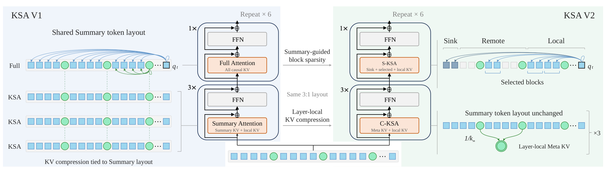
Figure 2 的中间部分给出最重要的结构约束：新模型继续重复三个摘要层与一个精确访问层，而没有改变 Summary 插入的位置。左侧旧模型在每个 KSA 层读远程 Summary，在 Full 层读全部原文；右侧 C-KSA 将远程 Summary KV 转为层内 Meta，S-KSA 则用 Summary 引导选择少量原文块。图中绿色圆点对应的 Summary 序列始终保留，紫色 Meta 只出现在缓存与层内注意力接口上，不成为新的跨层 token。这个区别决定压缩强度可以按层变化：后续层接收的仍是同样数量、同样分块位置的 Summary 隐藏状态，而不是上一层已经压缩过的 Meta。图右侧还把 sink、远程选择块和局部窗口并列，提醒读者精确访问层不等于单纯 top-K，局部连续信息与稳定注意力起点仍被显式保留。两个新层互补处理原架构的两条昂贵通路，但不会消除 Summary 自身逐层计算的成本；八个文本 token 之后仍有一个 Summary，因此在输入序列层面仍存在额外位置。结构转换之所以能够从预训练父模型开始，也依赖这些位置和原参数接口没有被整体改写。从层数来看，Figure 2 标记的重复六次四层单元对应十九亿模型的二十四层，精确访问层有六层。不同颜色区分文本、Summary和Meta，而不是三种不同的主干网络。新旧模型拥有相同交错序列，只更换层内读取方式，说明复用checkpoint的基础是输入位置与残差状态一致。压缩模块和路由模块虽都读Summary，却不共享相同投影参数，也不要求相同训练目标。将它们画在左右两个层类型里，正好避免把Meta误当成索引键。 设每个 Summary 对应 $k_s$ 个文本 token，每 $k_m$ 个连续 Summary 组成一个压缩组。组内第 $r$ 个 Summary 的归一化层输入为 $h_r$，先计算原骨干的键值以及新增聚合投影：
符号解释：$W_K,W_V$ 是已有键和值投影，$A$ 是新训练的聚合投影，$z_r$ 的宽度等于全部 KV 头拼接后的维度。键归一化按注意力头独立进行。新增的投影并不是给一个 Summary 输出单一权重，而是给每个特征坐标输出可学习的选择倾向，允许组内不同 Summary 分别贡献不同的信息维度。原文随后加上组内位置偏置并沿 Summary 轴归一化：
符号解释：$B_r$ 是第 $r$ 个组内位置的可学习向量；$\alpha_r$ 与 KV 特征同宽，每个坐标在所有组成员上的权重和为一。这里是逐维池化，不能读成对整条 Summary 向量乘同一个标量。同一套逐维权重同时用于键和值，接着在池化键上施加位置编码：
符号解释：$\odot$ 是逐元素乘法，$p_g$ 是该组最后一个 Summary 的位置，$M_g$ 是组 $g$ 的 Meta KV。RoPE 在池化之后施加，而不是先把各位置旋转后的键直接平均。$A$ 与位置偏置为每层独有、同层各组共享，因此同样的 Summary 隐藏输入可以被不同层压成不同粒度。Meta 不经过下一层前馈或残差传播，原始 Summary 状态仍正常继续向前。这正是“存储时再压一层”与“把 Summary 本身换成更粗 token”的结构差别。
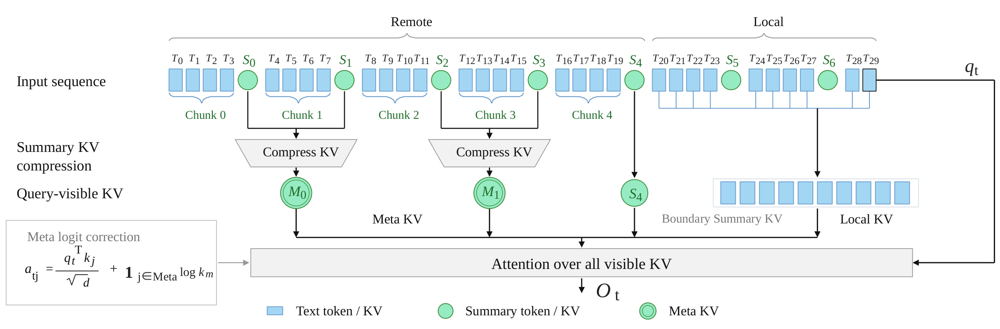
Figure 3 用四个文本 token 一个 Summary、两个 Summary 一个 Meta 的小例子显示可见集合。较远且完整离开局部窗口的 Summary 组转为紫色 Meta；紧挨窗口、尚不能组成完整远程组的 Summary 仍保留为独立条目；局部区则直接读蓝色文本 KV。三种条目进入同一个注意力归一化，不能各自计算后随意平均，否则局部与远程的竞争关系会改变。图中从 Summary 到 Meta 的箭头表示压缩的是该层键值，不是删除绿色 Summary 位置；这些位置在跨层隐藏序列中仍存在。Meta 的位置取压缩组最后一个 Summary，因果边界也要求整个组已成为远程历史。边界 Summary 的存在因此是正确性要求：如果一个组还覆盖局部窗口，提前压成 Meta 会混合不该同样处理的上下文，甚至让读集合与因果定义不一致。图左下角还给出对 Meta logit 加上 $\log k_m$ 的校正。把许多相近条目合并为一个后，softmax 分母中远程项数下降，即使局部 logit 未变，也会被动增加局部注意力。加法相当于给该远程项的指数权重乘以组大小，是对原注意力质量分配的近似补偿；它不是保证池化后所有查询行为严格等价的定理，组内键值差异越大，仍可能损失特定事实。还需注意边界随查询位置动态移动。越过一个块边界并不立即把所有早期Summary合成新的Meta，必须等完整组全部离开局部窗口才执行压缩。这意味着缓存中始终可能有不足一组的独立Summary，相关开销在长序列渐近项中较小，却在较短序列不可忽略。图中的局部可见集合包含当前查询自身，因此实现因果掩码时不能把当前文本键值漏掉，也不能读取尚未完成的块摘要。 远程历史名义上由 $k_s$ 倍变为 $k_sk_m$ 倍序列压缩，但整个层还保存局部文本、近期 Summary 和待压缩组。每层每请求保存标量数的主要关系为：
符号解释：$N$ 为文本长度，$H_{\mathrm{KV}}$ 为 KV 头数，$d_h$ 为头宽，$W$ 为局部完整块数量，$f$ 为 Full 层比例。第一式数标量而非字节，实际显存需再乘数据类型宽度及层数并计入辅助缓存；第二式只比较匹配层数与头宽的增长项。取八个文本一摘要、每一百二十八个摘要一 Meta 时，远程项压缩一千零二十四倍，但四分之一精确访问层仍保存原始文本 KV。远程单层项的巨大比例不能当成整机缓存减少一千倍。对固定组大小，缓存仍随长度线性增长，并未变成固定大小循环状态。
2.2 Sparse KSA：Summary 查询块内内容，再用索引选择原文
S-KSA 把每个小块继续划成 $b$ 个 token 的路由块，要求块长整除 Summary 的文本块长。它不直接拿 Summary KV 当路由键，而是让 Summary 的隐藏状态通过独立辅助查询投影，去聚合各个路由块内文本。辅助查询、键分别经 RMSNorm 与 RoPE，值通过独立值投影；这些投影与主干注意力参数分离。一个辅助头得到：
符号解释：$u$ 为路由块，$K^A,V^A$ 只包含该块的 $b$ 个文本投影，$q_S$ 来自所属 Summary，$d_A$ 为辅助头宽，$p_S$ 是 Summary 所在文本块最后一位置。块内所有 token 竞争权重，Summary 只提供查询，没有作为值混入块表示。同一个 Summary 可给其下多个路由块提供相同查询，但每块聚合的是自己的文本，因此得到不同表示。多头输出拼接为 $z_u$，再映射成所有索引查询头共享的块索引键。
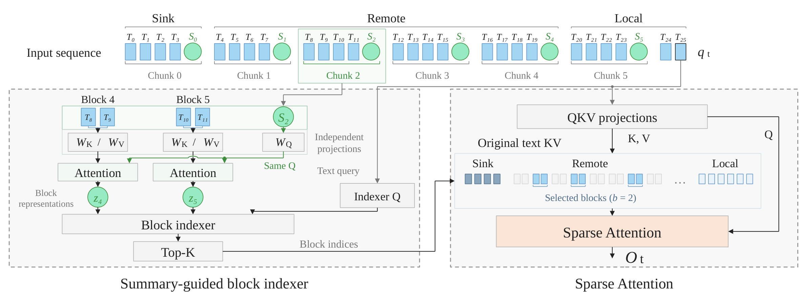
Figure 4 左边的两个路由块共用 Summary 提供的查询，却各有独立文本键和值，输出分别为块表示。索引器再将当前文本查询与这些块表示比较，产生 top-K 块编号。右边主注意力使用原骨干 QKV 投影，从缓存读取这些编号指向的原始文本，同时加入局部窗口和初始 sink。连接左右的只是块索引，并不是池化后的值向量或路由概率。因此辅助表示即使低维，也不必承载回答所需的全部原始细节，它只需提供足够准确的相关性排序。主注意力能在被选块内进一步决定哪些 token 真正重要，这解释块路由为何可能在减少候选数量时仍维持接近逐 token 路由的结果。图中示例使用两个文本一块，实验主配置则使用四个文本一块；不能把示意参数当成默认配置。所有远程候选必须来自已经完成的 Summary 文本块并位于局部因果窗口之前，避免用尚未生成完成的 Summary 或与局部集合重叠的块。这样一来，路由错误的影响也非常明确：相关块若未被选中，主注意力再强也看不到它；被选中后，原始细节仍完整可用，误差主要集中在选择阶段而非块内恢复阶段。辅助聚合在每个精确层建立自己的块表示，它的用途不是生成摘要文本，也不需要监督一个自然语言摘要目标。块内注意力使Summary可以挑选当前层认为重要的局部特征，多查询头则让当前token从不同相关性方向评分。主注意力与索引模块的这种隔离有利于冻结原模型训练路由，但同时造成离散选择缺少主任务端到端反馈：正文所示路线依赖教师分布，而不直接让最终答案损失反向改变已选集合。
块分数沿用 Lightning Indexer 的多查询头与共享键形式：
符号解释：$H_I,d_I$ 为索引头数与头宽，$w_h$ 是由当前文本层输入产生并按头数平方根缩放的标量，$k_u^I$ 是块表示的共享索引键；$L_t,R_t$ 分别为局部和被选远程位置。索引分数经过 ReLU 后加权，部分 RoPE 在文本查询位置与块最后位置编码。最多选择 $K/b$ 个远程块，$K$ 是原始文本 token 预算，八个 sink 计入该预算，局部一千零二十四个 token 另计。最终主注意力对全部局部与远程原文做单个 softmax，索引分数仅决定读取集合，不再作为额外主注意力权重。路由候选约为 $N/b$，比逐 token 索引少 $b$ 倍，但预填充路由仍是 $O(N^2/b)$，不能把它称为严格线性注意力。
2.3 KV Cache 与 Kernel Design：把逻辑节省转成少搬运的数据
C-KSA 的解码缓存同时具有一个连续注意力区域与一个 Summary 环形缓冲。连续区域由当前块、局部文本环、远程 Meta 与尚未压缩 Summary 组成；新文本从当前区域右向左写，使已填入位置紧贴局部环。块完成时先计算 Summary 对本块文本及自身的聚合，再把完整文本与 Summary 状态写入相应环。满环会替换最老局部块，其 Summary 进入远程区；累积够一组后才压成 Meta，覆盖组首位置并释放其余槽。整个可见 KV 保持连续，解码查询通过一次切片读取，避免每步先拼接几段临时缓存。Summary 的辅助聚合状态也需保留，不能只计算理想 Meta 数量而忽略这些状态。 预填充没有逐步维护同一个解码环，而是通过规则寻址读取交错文本与 Summary，并从另一缓冲读 Meta。原文把逻辑可见区与物理索引分开：
符号解释：$a$ 是局部窗口首块，$g$ 是其前完整 Meta 组数量，三个区间分别对应局部文本、边界 Summary、远程 Meta；$\phi_T,\phi_S$ 把逻辑文本或 Summary 编号映射为交错物理位置。Meta 索引直接寻址独立缓冲。规则可以在 kernel 内算出，因此不用把稠密掩码或大块索引表存入显存。处理三个片段时在线 softmax 状态连续传递，并只对 Meta 加注意力质量校正。
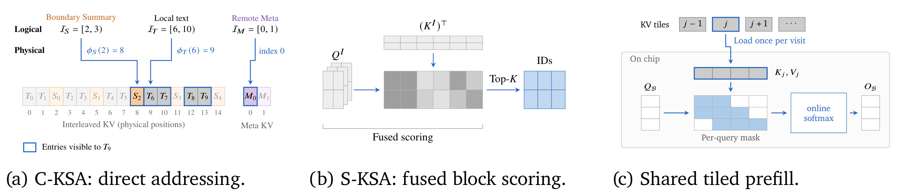
Figure 7 的三个子面板分别对应把结构优势实现为 GPU 优势所需的三个条件。左侧通过简单整数映射，把查询需要的三类逻辑区间定位到物理缓存，减少索引表开销；中间在片上融合查询键点积、ReLU 与多头加权，避免把每头候选分数写到全局显存，再单独选出块编号；右侧用 FlashAttention 风格的瓦片读取和在线 softmax，让一组查询共享同一次 KV 瓦片搬运。S-KSA 的各查询所选块不同，因此先构造保守的共同瓦片访问计划，跳过所有查询都不用的瓦片，再用逐查询掩码保证每个查询的选择、局部窗口和因果边界。这个共同计划不要求每个查询读取集合完全相同，掩码决定最终有效对，而瓦片决定搬运调度。解码阶段则用块索引直接从缓存读取，避免先 gather 到临时缓冲再调用注意力产生的额外读写。C-KSA 因缓存连续可以使用 SDPA，S-KSA 需要定制稀疏 kernel。因而同样的理论运算量下降，在没有这些寻址、融合和调度改动时未必形成等比例吞吐增益；原文实际测量所验证的是完整实现，而不是仅在模型公式中删掉若干候选项。这里共享在线softmax不仅是显存优化，也是数学接口约束。局部文本、边界Summary与Meta必须延续同一最大值和分母状态，才能对应单个注意力分布；如果分别调用三次注意力再相加，得到的远近权重就不同。稀疏层的共同瓦片调度可能加载某些仅少数查询需要的条目，故实际搬运量受查询集合相似性影响。这个额外成本由kernel和请求内容共同决定，单看选择token数无法完整预测吞吐。
2.4 Adaptation Protocol：先迁移压缩，再蒸馏块选择
转换从预训练的 128K Hybrid KSA checkpoint 开始，不是重新训练所有参数。C-KSA 首先只训练新投影与组内偏置，二者零初始化，对应均匀池化；原参数冻结时，同时计算当前层输入上的压缩与未压缩注意力输出，在输出投影之前对齐。随后进入全参数阶段，只用文本交叉熵继续适配：
符号解释：$I_C$ 是 C-KSA 层集合，$T$ 是批内文本位置，$D$ 是拼接注意力宽度，$O^C,O^K$ 来自相同输入，$\operatorname{sg}$ 截断教师梯度。逐坐标平方误差先截到零点一，再平均，以免少量异常输出支配聚合模块训练；这也意味着大误差处无法无限提供更强梯度，恢复还依赖语言模型目标及后续全参阶段。 随后 S-KSA 冻结整个继承骨干，包括已适配的 C-KSA 聚合参数，只训练自己的辅助聚合与 Indexer。训练阶段仍保留 Full 层的稠密注意力，用它教路由；推理阶段才切成选择块的稀疏注意力。教师先把主干多头注意力概率平均，再对每块取最大值，并在所有合法远程块之间归一化：
符号解释：$B_u$ 为块内文本位置，$U_t$ 是合法远程候选，$a_{t,i}$ 是头均值稠密注意力概率，$\pi_t$ 是索引分数分布。取最大值的直觉是块内一个关键 token 就足以值得精确读取；取和可能奖励许多低相关位置的扩散质量。不过这也是对检索尖峰的偏好，并不保证覆盖需要对全文统计的任务。
3. 实验结果
3.1 1.9B 主结果：接近父模型，但保留了可见损失
十九亿模型采用二十四层 MHA，十六个查询与 KV 头，头宽一百二十八，隐藏维度二千零四十八。父模型与新模型都每八个文本位置插一个 Summary。主配置 C-KSA 一百二十八个 Summary 一个 Meta，S-KSA 四 token 一块、远程预算四千零九十六、局部窗口一千零二十四。基线包含 Full、Hybrid SWA/SCA/GDN、Pure KSA 和 Hybrid KSA，来源为旧 KSA 报告；新模型使用同语料混合继续训练。长上下文评估在 RULER 的六种长度上进行，通用能力包括知识、数学和代码九项，代码采用 pass@1。
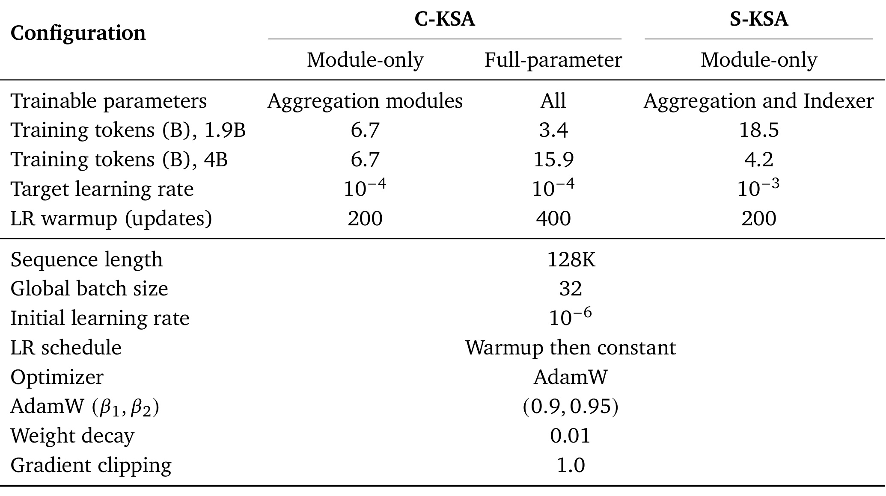
Table 3 把模块训练和全参训练的成本分开。十九亿模型 C-KSA 用六十七亿 token 模块适配及三十四亿 token 全参适配，S-KSA 再用一百八十五亿 token 训练新模块；四十亿模型相应为六十七亿、一百五十九亿及四十二亿 token。C-KSA 目标学习率为万分之一，S-KSA 为千分之一，所有阶段都在 128K 固定长度、全局批量三十二下训练。各阶段重置优化器与学习率调度，采用 AdamW、零点零一权重衰减和梯度裁剪一；因此不同阶段 token 数不能简单当成同一种优化工作量。表格直接说明 retrofit 仍需可观训练数据，不能把只训练新模块误解为无需训练。
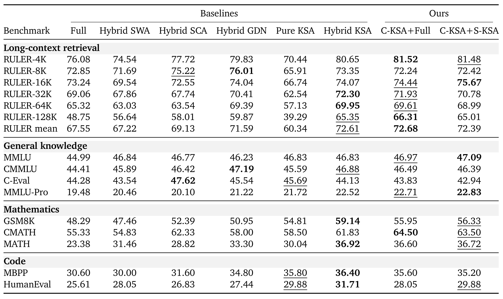
Table 4 中 C-KSA+S-KSA 的六长度平均为 72.39%，比 Hybrid KSA 的 72.61% 低零点二二个百分点，比 Full 的 67.55% 高四点八四个百分点。128K 分别为 65.01%、65.35% 与 48.75%，显示主要结论是节省成本同时接近父模型，并延续父模型相对稠密基线的长检索优势。中间的 C-KSA+Full 平均达到 72.68%、128K 为 66.31%，说明压缩阶段并未在这个设定明显损害总体检索；之后稀疏化仍使最长分数下降一点三零个百分点。通用能力不应合成“完全无损”：GSM8K 相对父模型从 59.14 降到 56.33，MBPP 从 36.40 降到 35.20，HumanEval 从 31.71 降到 29.88；MMLU、MMLU-Pro 和 CMATH 上有所提高。表格没有统一改善所有能力，保留具体损失才能判断服务侧收益是否值得任务侧代价。
作者展示的恢复曲线也支持阶段设计：C-KSA 模块适配先恢复部分检索，全参阶段进一步接近父模型；S-KSA 在已压缩骨干上只训练新模块可以接近父模型。曲线比较了块长二、四、八及逐 token DSA，说明更粗块不是只影响最终误差，也影响适配动态。由于主实验未给多随机种子置信区间，平均差距很小时仍需避免把小数点后百分之一的排序解释为确定优势。
3.2 4B GQA：可以迁移，归一化决定训练是否顺利
四十亿骨干有三十六层，三十二查询头与八 KV 头，因此本来已经具备 GQA 的位置宽度压缩；Summary 仍是八文本一块，C-KSA 主组大小改为三十二，使远程序列项压缩二百五十六倍。它与 GQA 的头共享可以相乘，但不是直接移用十九亿模型的一千零二十四倍组配置。S-KSA 远程、sink 与局部预算相同，新增索引查询键 RMSNorm。没有这项归一化时，索引损失偏高，二百一十八亿适配 token 后仍落后于 C-KSA+Full；加入后四十二亿 token 即恢复近父模型结果。作者将其可能原因解释为不同骨干特征尺度影响索引 logit 与优化，这属于机制假设，并未通过完整因果测量确认。
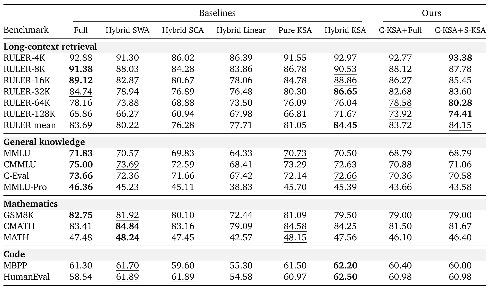
Table 5 的 C-KSA+S-KSA 六长度均值是 84.15%，父模型 84.45%，C-KSA+Full 83.72%；128K 新模型 74.41%，父模型 71.67%，Full 65.86%。这个结果证明所述迁移至少不局限于十九亿 MHA，但更长长度改善并不意味着所有长度均改善：8K 和 16K 新模型分别是 87.78、85.45，低于父模型的 90.53、88.86。表内也明确列出通用能力，新模型相对父模型普遍降低，CMATH 为 81.67 对 84.25，MBPP 为 60.00 对 62.20；从 C-KSA+Full 再加入稀疏的变化均不超过零点四个百分点。原文结论段却概括四十亿验证仅覆盖检索、通用能力限十九亿，这与该表和正文不一致。本笔记保留表内可直接核对的数据，同时把效率测量明确限定在十九亿，不推断作者遗漏的意图。
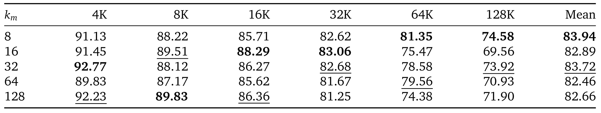
Table 6 对每种组大小使用相同模块与全参预算。组大小八的均值 83.94，三十二为 83.72，而六十四及一百二十八分别为 82.46、82.66。作者选择三十二，是相对八减少四倍远程 Meta 数量、同时保持相近检索的一种折中，而非所有指标最优。十六的最长得分降到 69.56，却在短长度表现较好，显示粒度与性能并非单调关系。这个结果限制把十九亿最佳设置直接外推到四十亿，更提示逐层粒度配置需要目标骨干自己的验证；论文提出按层可变，但这里并没有展开逐层最优搜索。因此作者报告的是预算受限下的选点，而非压缩越强表现必然越差的简单规律。
3.3 子任务与位置：单针恢复不能替代全文聚合
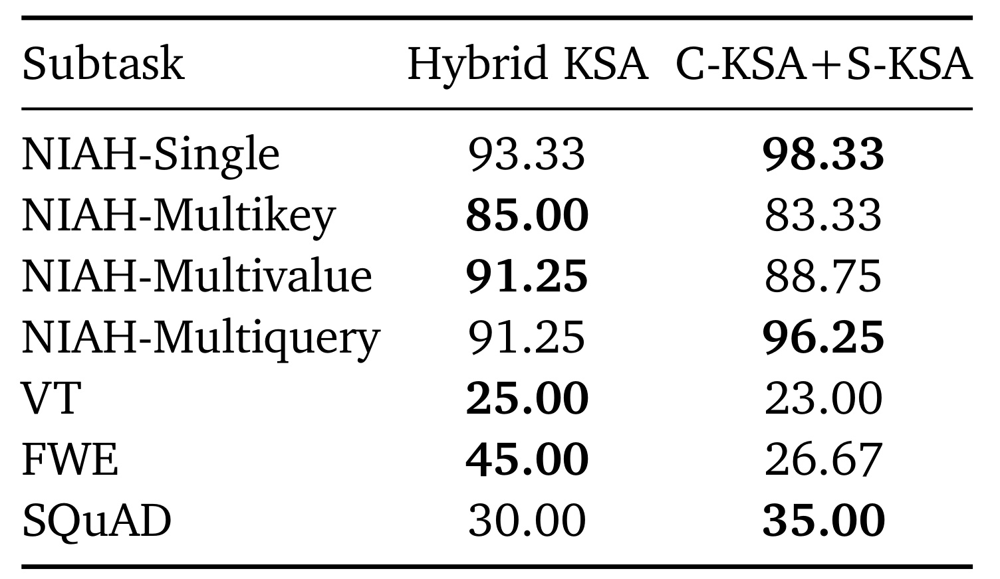
Table 7 提供总体均值掩盖的信息。单针从 93.33 提高到 98.33，多查询从 91.25 到 96.25，SQuAD 从 30.00 到 35.00；多键和多值却分别降低一点六七、二点五零个百分点，变量追踪从 25.00 到 23.00。最明显的是频词抽取 FWE，由 45.00 降至 26.67，降低十八点三三个百分点。这类任务需要跨大量位置累计统计，少数局部注意力尖峰与被选块无法保证足够全局覆盖。它表明“能把针找回来”与“能统计整堆草”属于不同能力。若长用户序列任务依赖频率、反复行为或兴趣分布，多次出现的弱信号被稀疏丢弃可能改变聚合结果，迁移实验必须额外覆盖这类需求，而不能只用少量强证据检索任务作为验收。
原文单针位置网格遍历六种长度与十一个插入深度，新模型在 128K 所有深度平均 97.88%。它有助于排除只保留序列首尾而中间位置完全无法访问的情况，但仍是明确问题指向单个目标的合成测试。检索成功未证明真实长文中的多步骤组合、跨段冲突识别或持续更新记忆同样可靠。对工程阅读而言，这个区别比“支持 128K”的标签更有决定意义：上下文长度定义可接收范围，实际能力由任务所需证据数量与路由覆盖共同决定。
3.4 单 H800 实测：吞吐增益显著小于理论运算量倍数
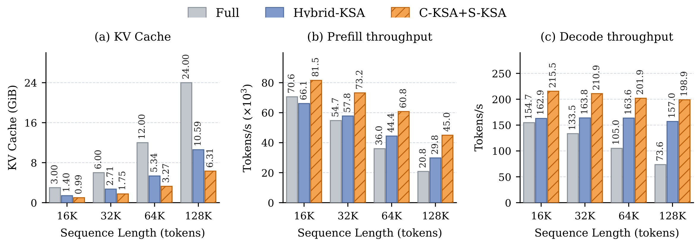
Figure 11 使用单 NVIDIA H800、BF16、batch 为一，在 16K 至 128K 上实测。128K 新模型驻留缓存 6.31 GiB，Hybrid KSA 10.59 GiB，Full 24.00 GiB，分别减少百分之四十点四与七十三点七；该驻留口径包括 Indexer、辅助状态、KV 和工作区。预填充为每秒四万四千九百七十一 token，相对 Hybrid KSA 两万九千八百三十七为一点五一倍，相对 Full 两万零八百三十为二点一六倍。解码新模型每秒一百九十八点八五，父模型一百五十七点零二，约一点二七倍。普通图右栏还显示较短长度的新模型解码保持两百 token 每秒以上，速度收益并非只有最长长度才出现，但各长度增益范围不同。论文另给矩阵 FLOPs 与理想 BF16 缓存估算，128K 运算量相对 Full 少六点三八倍、相对 Hybrid 少二点七六倍；这些数值不是吞吐提升倍数，尤其不能称为硬件峰值算力提升。
分析缓存估算只计键值与索引键，新模型相对父模型约缩小一点三五倍，而实测驻留比为一点六八倍左右；差异来自工作区等口径，不应把两个比例混用。首页图的简化注释与实验正文的细化数值也有差别，本文以第三点六节正文和实测图为准。剩余显存主要在精确访问层的原文 KV：稀疏读取减少了每次搬运，但为了未来任意查询仍保留历史。批量更大、分页服务或并发请求情况下，瓦片命中、临时缓冲、调度和带宽瓶颈都会变化，本轮数字只能支持已测单卡单请求条件。
3.5 压缩与路由消融：同样远程比例并非同样表征
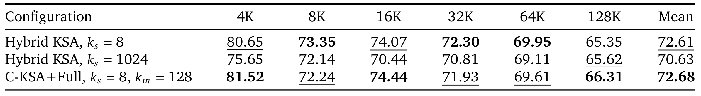
Table 8 把远程一千零二十四倍压缩拆成两种实现：直接使用一千零二十四文本一个 Summary，或八文本一个 Summary 后再一百二十八摘要一个 Meta。后者均值 72.68，直接粗化 70.63，差距二点零五个百分点。这个结果符合细 Summary 跨层处理有益的解释，但比较不是完全控制训练历史：直接粗块模型从头训练，分层模型由小块父模型迁移而来，而且后者输入 Summary 更多、另有聚合模块计算。应把它视为支持分层设计的实证，而不能宣称已经隔离出池化本身的唯一因果收益。保留 Full 层也帮助恢复原文信息，所以这张表没有证明纯压缩层能够独立实现同等精细检索。
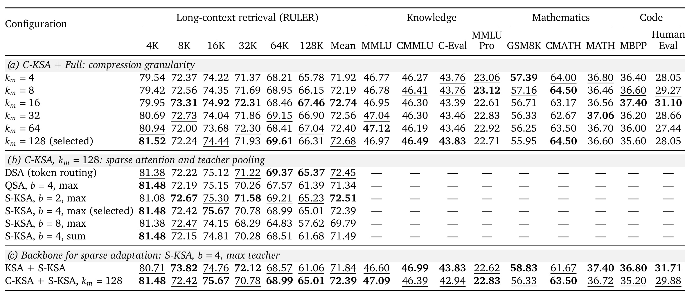
Table 9 的第一面板中 C-KSA+Full 组大小四到一百二十八的均值落在 71.92 至 72.74，并没有随压缩持续降低。第二面板在相同压缩骨干上比较路由：块长四的均值 72.39，逐 token DSA 72.45，块长二 72.51，候选数却分别是 DSA 的四分之一、二分之一；块长八降到 69.79，128K 仅 57.62，粗粒度超过一定范围会伤害选择精度。同为块长四，Summary 引导方法 128K 为 65.01，QSA 61.39；最大值教师比求和教师的 61.68 高三点三三个百分点。这些实验共同表明辅助块表示与教师设计实际影响最长检索，不只是实现细节。第三面板显示相同稀疏适配施加在未压缩父模型时 128K 仅 61.06，施加在 C-KSA 上为 65.01，支持两种变换相容，但仍是特定训练配方下的对照。
随着 C-KSA 远程条目已降到约一百二十八个，更大组只能节省有限条目，原文因此暂不探索超过一百二十八的粒度，把更高压缩留给百万 token 场景。这一判断也说明继续加大压缩并不一定是下一步最有效优化：如果主显存位于稀疏层原文，削掉少量 Meta 不会明显改善整机。一般能力序列常短于远程与局部预算总和，所以某些消融只给 RULER，表内横杠表示未报告或尚未激活稀疏，不表示该方法无法完成通用任务。
3.6 Oracle 与层注意力：解释可稀疏性，也暴露选择器差距
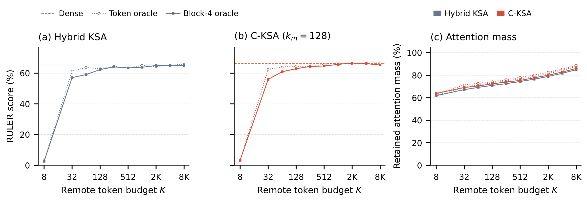
Figure 12 固定模型参数，直接用 Full 注意力概率挑 token 或按块最大值挑四 token 块。随着远程预算增大，检索迅速接近稠密参考，C-KSA 在五百一十二远程 token 时块 oracle 已达到 64.71。四千零九十六预算加局部一千零二十四，读取位置约占 128K 的百分之三点九，保留解码注意力质量百分之八十二点八三；仅局部与 sink 已有较多质量，却检索很差，说明质量总和不能代替是否覆盖答案。曲线是路由的可行性上限分析，oracle 仍需知道未稀疏的概率，不能拿来声称免费推理。训练出的 Indexer 无法保证总选中同样块，故真实新模型与 oracle 之间的差距才是后续可改进部分。最小预算点主要由sink构成，注意力质量看似不低却几乎不能检索，尤其说明强注意力可能来自结构稳定位置而非答案内容。路由评估应同时记录答案所在块是否命中、命中后答案是否被利用，以及未命中导致的具体错误；只追求总质量保留会遗漏这个区别。
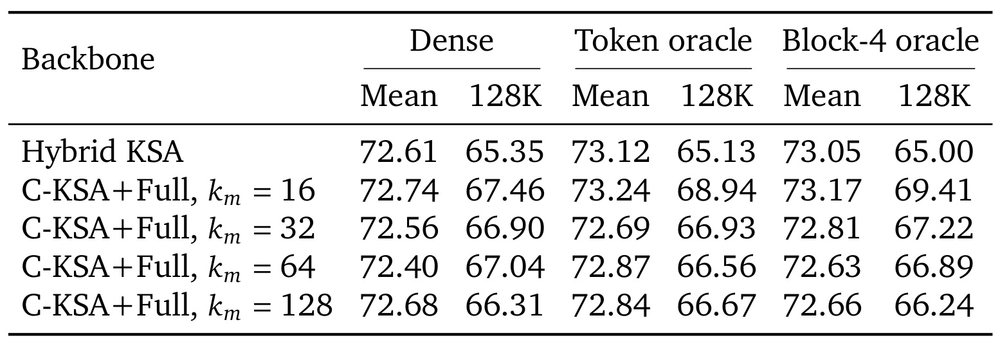
Table 10 对 Hybrid KSA 及四种 C-KSA+Full 给出六长度平均与 128K。每种 oracle 相对自身稠密参考的均值差在零点五一个百分点以内，C-KSA 组一百二十八的块 oracle 128K 为 66.24，稠密为 66.31。它说明在这组检索分布与预算下，正确选块本身不要求更新骨干。但不同组配置仍有涨有跌，例如组十六块 oracle 128K 为 69.41，高于原稠密 67.46，不能由此概括所有稀疏都提升性能。注意力概率来自各自骨干，比较的关键是与同一骨干参考配对，而不是横向混成一个统一选择上限。这个配对设置避免把不同教师的分布形状与选择质量混为一谈，也使每个压缩配置都有自己的可达到参考。
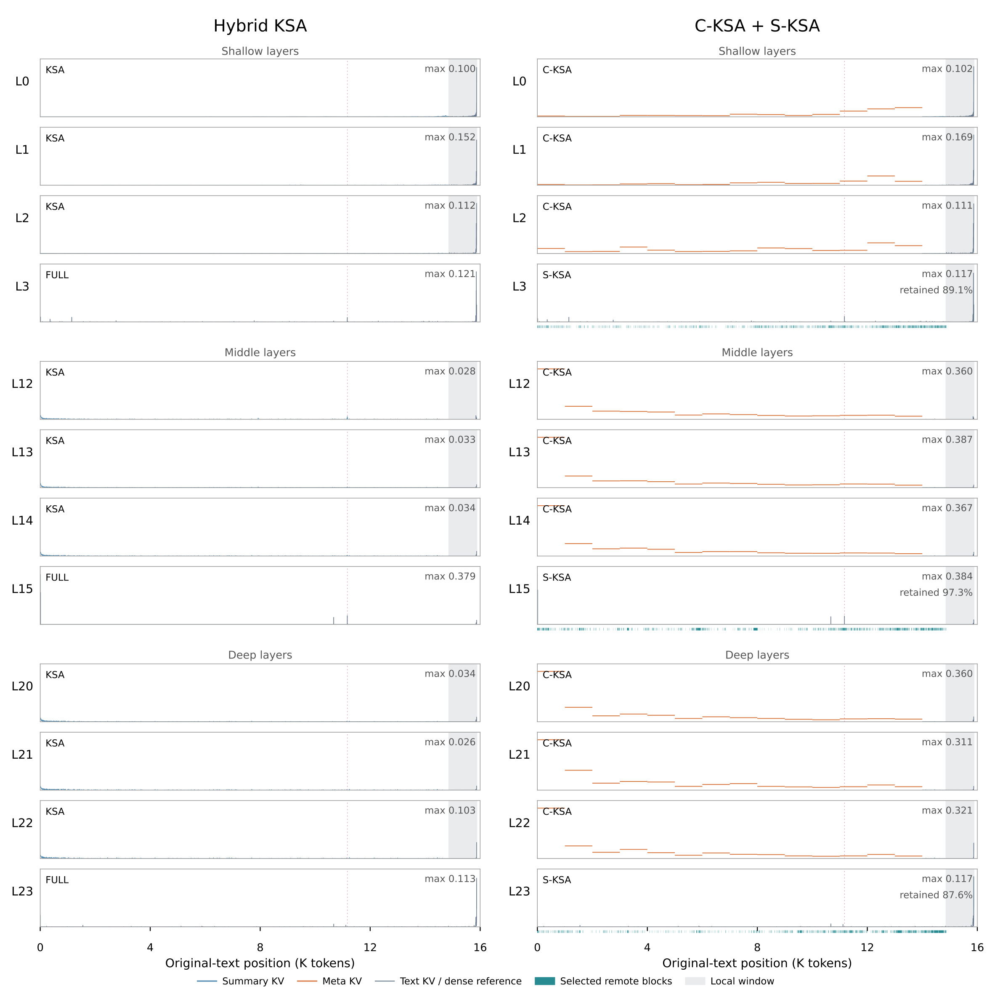
Figure 13 在一个共同 NIAH 输入上，观察预测答案第一位数字时浅、中、深层注意力。压缩模型展示的浅层 Meta 质量约百分之七点七至十三点七，中深层约七十三点一至八十七点八，说明 Meta 并不是闲置缓存，深层实际从压缩远程历史获得较多信息。三条展示的 S-KSA 选择都覆盖虚线标记的答案区，与局部一起只读百分之三十一点五原文，却保留百分之八十七点六至九十七点三稠密质量。这里序列是 16K，固定五千余 token 预算占比自然远高于 128K，不能直接套用上一图百分之三点九的比例。图中 S-KSA 展示的是稠密参考概率与所选块覆盖，目的是比较选择，并非声称这些被跳过位置在真实稀疏运行仍被计算。这是一个解释性案例，不是整个数据集所有层都表现一致的统计结论。而且只有一个问答位置与一个输入被展示，尚不能据图中深层集中现象判断所有领域文本都依赖相同远程摘要，更不能推断所有层可以使用同一压缩强度。
3.7 额外训练控制与证据边界
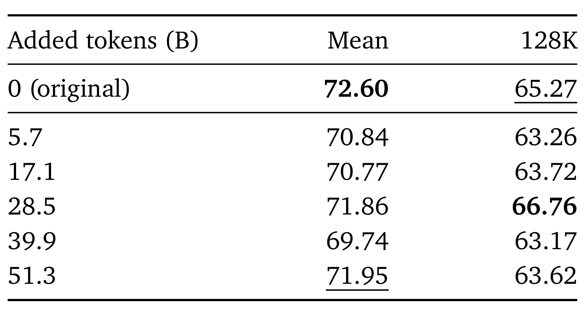
Table 11 给未改架构的 Hybrid KSA 再训练五十七亿至五百一十三亿 token。所有检查点均值低于原来的 72.60，最长长度在二百八十五亿时升到 66.76，后面又回落。这使作者使用原 checkpoint 作为能力保留参考有一定依据，但控制配方采用全局批量二百五十六、峰值学习率万分之四和预热稳定衰减，与新模块适配配方不同。它排除了“额外 token 必定带来持续提升”的简单解释，没有穷尽所有优化配方，也不能证明任何继续训练都无益。表内初始 128K 是 65.27，而主结果为 65.35，应保留各表自己的原数值，不强行拼成同一次评测。
4. 总结
KSA V2 最值得记住的是接口分离：细粒度 Summary 继续在网络中更新，层内 Meta 仅承担压缩 KV；同一 Summary 又作为辅助查询生成块路由表示，被选块仍用原文键值完成主注意力。这样可以对大量廉价记忆层与少数精确访问层分别优化，保留旧模型 token 布局并迁移已有参数。训练也对应这个分工：先对齐压缩输出并继续预训练，再以稠密注意力教师学习路由，推理时才切成稀疏读取。结构、训练和 kernel 三部分共同产生实测收益，缺少其中一环都不能默认复制本文吞吐。
十九亿配置在 128K 保持近父模型检索，以单 H800 单请求测量获得百分之四十点四驻留缓存减少、一点五一倍预填充和一点二七倍解码吞吐，是这篇报告最明确的工程结果。四十亿 GQA 的检索迁移进一步说明序列压缩可以与头共享组合，但参数尺度变化使索引归一化成为实际适配问题。本文能提供比压缩率排行榜更有用的判断：先定位当前瓶颈在远程摘要项、精确层历史还是路由，再决定应该强化哪一侧。
有四类边界必须保留。第一，FWE 的十八点三三个百分点退化说明聚合任务存在明显代价，通用知识、数学、代码也并非全无损；按检索尖峰选择可能遗漏广泛分布的弱证据。第二，主实验只到 128K，且真实效率只覆盖十九亿、单 H800、BF16、batch 一；不能推出百万上下文或多请求生产系统同样收益。第三，基线继承旧报告，新模型额外训练，继续训练控制配方与适配不同，压缩对照还有从头训练与迁移差别，因此因果解释保持有限。第四，S-KSA 保存原文 KV 且路由预填充仍带二次项，稀疏读取不会自动消除长期线性存储；没有独立代码入口核验和本轮复现，也限制对实现可移植性的判断。原文结论与四十亿通用能力表的范围措辞不一致，后续引用需指向具体表格。
下一步值得做三项跟进。先在目标骨干复核 Q/K 归一化、块长与教师池化，测量训练 token 成本和误选块分布，不直接照搬十九亿超参数。再建立包含跨段聚合、长期兴趣频率与多证据组合的任务集，把答案覆盖率和遗漏证据分布与总体分数一起记录。最后做更接近服务的并发、分页缓存、长度混合测试，并探索精确层原文 KV 压缩或跨层共享；同时检查它们是否放大 FWE 类失效。对推荐长行为序列而言，最稳妥的迁移起点是比较“摘要记忆加少量精确读取”的质量成本曲线，而不是用论文标题或团队背景替代线上任务验证。